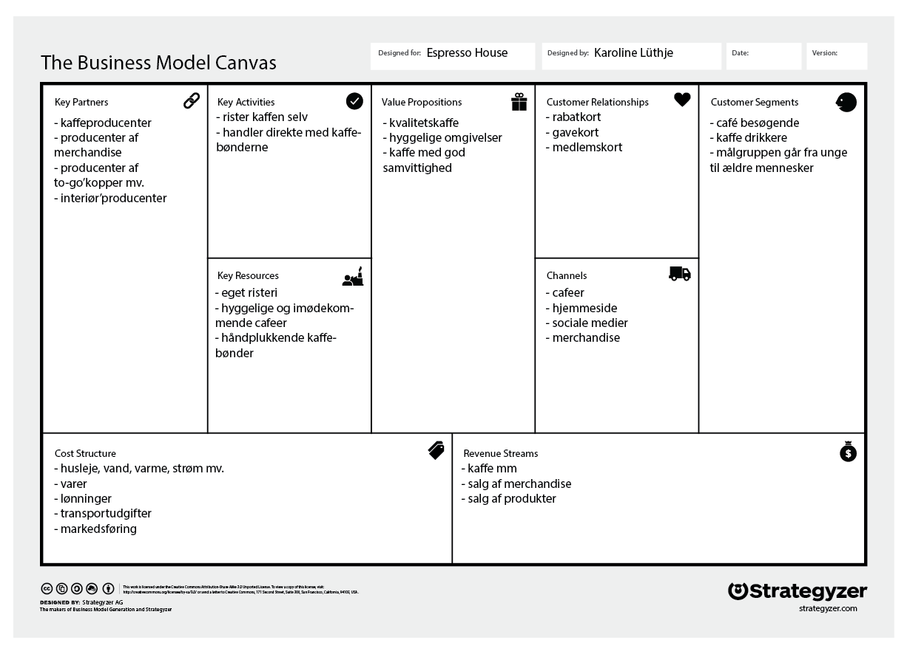

BUSINESS MODEL CANVAS
Info er fundet på https://dk.espressohouse.com
- Value Propositions - kundeværdien.
Hvad er produktet/servicen/ydelsen?
Hvilken værdi skabes for kunderne?
Hvilket problem løses?
Hvilket behov opfyldes?
Kunderne kan nyde en kop kvalitetskaffe med god samvittighed og i hyggelige omgivelser.
- Customer Segments - kundesegmentet.
Hvem køber produktet/servicen/ydelsen?
Hvem skabes der værdi for?
Espresso House besøges af alm cafégængere - især kaffedrikkere. Målgruppen dækker både og ældre mennesker.
- Key Partners - partnere.
Hvem samarbejder vi med for at levere/yde produktet/servicen/ydelsen?
Hvem er vores leverandører?
Hvilke ressourcer købes hos partnere?
Hvilke aktiviteter udfører partnerne?
Espresso House har en masse samarbejdspartnere i form af producenter, som producerer kaffe, to-go kopper, merchandise, interiør osv.
- Key Activities - aktiviteter.
Hvilke værdiskabende aktiviteter udfører vi for at kunne levere/yde produktet/servicen/ydelsen?
Espresso House rister selv kaffebønnerne og handler direkte med kaffebønderne for at sikre kvaliteten, samt sikre ordentlige forhold for arbejderne, så de kan levere kaffe, der kan nydes med god samvittighed.
- Key Ressources - ressourcer.
Hvilke ressourcer er nødvendige for at kunne udføre de værdiskabende aktiviteter?
For at kunne udføre deres aktiviteter, er det nødvendig ressource at Espresso House har deres eget risteri, samt at de har samarbejdet med de her kaffebønder, som håndplukker kaffen for at sikre kvaliteten.
- Customer Relationships - kunderelation.
Hvilken type forhold skal vi have til kunderne?
Espresso House vil gerne have faste kunder, som kommer igen, hvorfor de benytter sig af rabatkort/gavekort/medlemskort, der skaber loyale kunder.
- Channels - kanaler.
Hvordan kommer vi ud til kunderne?
Hvordan distribueres produktet/servicen/ydelsen?
Hvordan kommunikeres produktet/servicen/ydelsen?
Espresso House når deres kunder gennem merchandise, sociale medier, deres website og deres caféer.
- Revenue Streams - indtægter.
Hvordan tjener vi penge?
Hvilke typer af indtægtskilder har vi?
Espresso House tjener penge på deres kaffesalg, salg af andre produkter, samt merchandise.
- Cost Structure - omkostninger.
Hvilke omkostninger er forbundet med produktet/servicen/ydelsen?
Espresso House har omkostninger ift. at drive deres caféer - husleje, varme, vand, el osv. Derudover er der udgifter til varer, transport, markedsføring og lønninger.